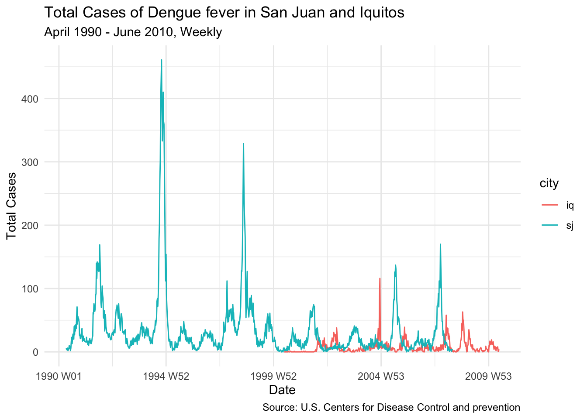
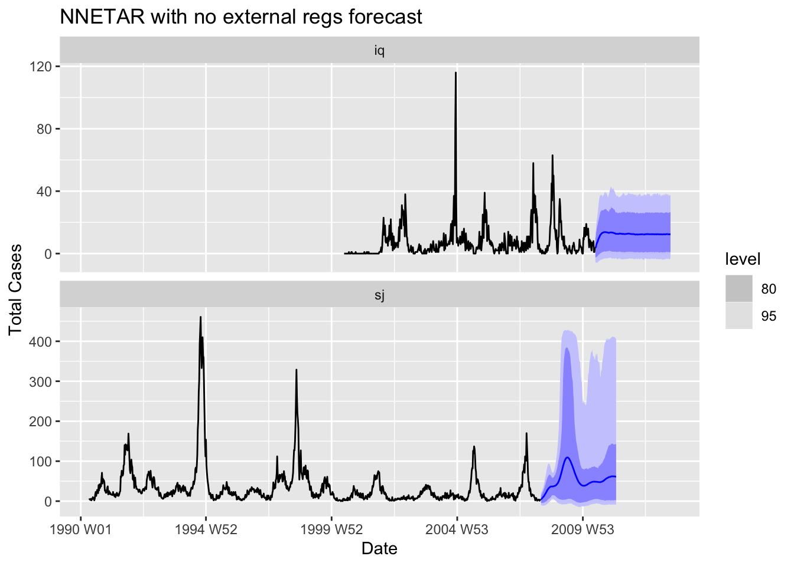

Dengue fever is a virus that is spread to people through the bite of an infected mosquito. A severe dengue fever case can lead to circulatory system failure, shock, and even death. Almost half of the world’s population, about 4 billion people, live in areas with a risk of dengue. Studying and forecasting the total number of infection incidents can help to tame this disease.
I am using the fpp3 package to forecast the next total weekly cases of Dengue fever two cities in Peru and Puerto Rico.
Rows: 1456 Columns: 24
── Column specification ────────────────────────────────────────────────────────
Delimiter: ","
chr (1): city
dbl (22): year, weekofyear, ndvi_ne, ndvi_nw, ndvi_se, ndvi_sw, precipitati...
date (1): week_start_date
ℹ Use `spec()` to retrieve the full column specification for this data.
ℹ Specify the column types or set `show_col_types = FALSE` to quiet this message.
Rows: 1456 Columns: 4
── Column specification ────────────────────────────────────────────────────────
Delimiter: ","
chr (1): city
dbl (3): year, weekofyear, total_cases
ℹ Use `spec()` to retrieve the full column specification for this data.
ℹ Specify the column types or set `show_col_types = FALSE` to quiet this message.
I am transforming the combined dataset into a tsibble, the format for fpp3 package. The newly created year_week is an index variable and the two cities are keys to treat their observations as separate time series.
dengue_ts |>#filter(city=="sj") |>autoplot(total_cases) +labs(title ="Total Cases of Dengue fever in San Juan and Iquitos",subtitle ="April 1990 - June 2010, Weekly",y ="Total Cases",x ="Date",caption ="Source: U.S. Centers for Disease Control and prevention") +theme_minimal()

We can see that the data for San Juan and Iquitos span different time periods but still overlap. We can also observe that most of the time the total number of cases is less than 50, however there are numerous spikes.
Code
plot(density(dengue_ts$total_cases))abline(v =50, col ="red", lty ="dashed")
There seems to be no really strong correlation between the total cases and any individual predictor. Nevertheless, I am going to use this ranking when choosing the variables for time-consuming models.
Here are plots of the variables with the highest correlations (in absolute values).
No obvious relationship between the spikes and the two variables.
After looking at the data, I am proceeding to create the forecast models.
STL decomposition and non-seasonal method
According to Hyndman, et al., the simplest method is STL decomposition with a non-seasonal model applied to the seasonally adjusted data. I am creating a decomposition model with STL and non-seasonal ETS.
# A tibble: 18 × 3
city .model AICc
<chr> <chr> <dbl>
1 iq K1 3539.
2 iq K2 3543.
3 iq K3 3545.
4 iq K4 3546.
5 iq K5 3548.
6 iq K6 3549.
7 iq K12 3545.
8 iq K15 3549.
9 iq K26 3571.
10 sj K1 7521.
11 sj K2 7520.
12 sj K3 7523.
13 sj K4 7525.
14 sj K5 7529.
15 sj K6 7532.
16 sj K12 7543.
17 sj K15 7548.
18 sj K26 7565.
The larger numbers of K worsen the AICc. Only the model for San Juan is slightly better at K = 2. Nevertheless, since the improvement is small, to stay consistent, I keep K = 1.
den_nn_fc |>autoplot(dengue_ts_c) +labs(title ="NNETAR with no external regs forecast",y ="Total Cases",x ="Date")

Here we can see that the model for Iquitos picked up the trend but then flattened out, which doesn’t look good. The model for San Juan, however looks promising but also looses all seasonality later on.
I am no trying NNETAR with external regressors: station_max_temp_c
reanalysis_specific_humidity_g_per_kg
reanalysis_min_air_temp_k reanalysis_air_temp_k.
However, in order to use them, I need features from the test data.
Rows: 416 Columns: 24
── Column specification ────────────────────────────────────────────────────────
Delimiter: ","
chr (1): city
dbl (22): year, weekofyear, ndvi_ne, ndvi_nw, ndvi_se, ndvi_sw, precipitati...
date (1): week_start_date
ℹ Use `spec()` to retrieve the full column specification for this data.
ℹ Specify the column types or set `show_col_types = FALSE` to quiet this message.
The test dataset also has some gaps, so I am filling them.
The resulting forecast looks very promising, indeed. The prediction intervals also seem to cover most of the probable observations, without getting into negative territory.
ARIMA w/ Regressors
To incorporate more predictor variables from the dataset, I am using another ARIMA model with external regressors.
Using only the variables with highest correlation doesn’t seem to improve the forecast, all that much. Therefore, I am going to use all of them. I am also adding Fourier for seasonality.
The same ARIMA model with seasonality included looks better than that with Fourier but worse than NNETAR.
Results
I had to upload the forecasts to the drivendata.org to obtain the evaluation of the models. The forecast used the observations at time T to forecast the number of cases at time T, because it was a forecast for the internally missing data.
I also had to manually remove some 3 observations from the predictions, since the evaluation dataset didn’t have some dates.
Given the Score and the Rank, NNETAR model is by far the best one. Decomposition model’s performance was quite low, ARIMA with seasonality and external regressors got a score of 25.93 and rank of 2042. NNETAR did better by a wide margin: the MAE score of 22.48 and rank of 512. This is out of approximately 12 thousand participants.
The respective submission IDs are id-240847, id-240852, and id-240853.
Further work
Adding more external variables will most probably increase the performance of NNETAR model. There also might be some calendar variables that should be included. For example, in the beginning we saw that the spikes occur in the same months. Adding dummies for high number months might improve the forecasts.
Source Code
---title: "Dengue Fever"execute: freeze: autoformat: html: code-fold: show code-tools: true---```{r setup, include=FALSE}knitr::opts_chunk$set(echo =TRUE)```## SignificanceDengue fever is a virus that is spread to people through the bite of an infected mosquito. A severe dengue fever case can lead to circulatory system failure, shock, and even death. Almost half of the world’s population, about 4 billion people, live in areas with a risk of dengue. Studying and forecasting the total number of infection incidents can help to tame this disease.I am using the fpp3 package to forecast the next total weekly cases of Dengue fever two cities in Peru and Puerto Rico.The dataset is from [drivendata.org](https://www.drivendata.org/competitions/44/dengai-predicting-disease-spread/) competition.```{r}library(fpp3)```I am importing and combining the data on the number of cases and 20 possible predictor variables.```{r}library(readr)dengue_fts <-read_csv("DengAI_Predicting_Disease_Spread_-_Training_Data_Features.csv")``````{r}dengue_label <-read_csv("DengAI_Predicting_Disease_Spread_-_Training_Data_Labels.csv")``````{r}dengue_label |>left_join(dengue_fts,by =c("city","year","weekofyear")) -> dengue```I am performing a quick random test to see if everything matches up.```{r}dengue_fts$reanalysis_dew_point_temp_k[256]==dengue$reanalysis_dew_point_temp_k[256]```I am transforming the combined dataset into a tsibble, the format for fpp3 package. The newly created year_week is an index variable and the two cities are keys to treat their observations as separate time series.```{r}dengue |>mutate(year_week =yearweek(week_start_date)) |>as_tsibble(key = city,index = year_week) |>arrange(desc(city)) -> dengue_ts```Here is the plot fro both cities.```{r}dengue_ts |>#filter(city=="sj") |>autoplot(total_cases) +labs(title ="Total Cases of Dengue fever in San Juan and Iquitos",subtitle ="April 1990 - June 2010, Weekly",y ="Total Cases",x ="Date",caption ="Source: U.S. Centers for Disease Control and prevention") +theme_minimal()```We can see that the data for San Juan and Iquitos span different time periods but still overlap. We can also observe that most of the time the total number of cases is less than 50, however there are numerous spikes.```{r}plot(density(dengue_ts$total_cases))abline(v =50, col ="red", lty ="dashed")``````{r}dengue_ts |>filter(city=="sj") |>tail(1)dengue_ts |>filter(city=="iq") |>tail(1)```Most of the models cannot work with gaps in time, so I am checking for explicit gaps.```{r}has_gaps(dengue_ts, .full = T)```Both cities have gaps, so I am filling gaps and using the previous value to fill them.```{r}library(zoo)``````{r removing explicit gaps}dengue_ts |>fill_gaps() %>%mutate_all( ~na.locf(.x, na.rm =FALSE)) -> dengue_ts_c```I am checking if there are any missing values left.```{r}colSums(is.na(dengue_ts_c))```There are no missing values in the dengue_ts_c.```{r}dengue_ts_c |>#filter(city=="sj") |>autoplot(total_cases)```It seems that there is some seasonality present. The seasonal plot shows that most of the spikes happen in the same months.```{r}dengue_ts_c |>gg_season(total_cases)```I am performing an STL decomposition to identify seasonality and trend, if any.```{r}dengue_ts_c |>filter(city=="sj") |>model(STL(total_cases) ) |>components() |>autoplot() +labs(title ="STL decomposition for San Juan")``````{r}dengue_ts_c |>filter(city=="iq") |>model(STL(total_cases) ) |>components() |>autoplot() +labs(title ="STL decomposition for Iquitos")```It seems that there is some seasonality when all the spikes are in the remainder. There also might be a slight increase in the trend for Iquitos.I am creating an ordered list of all the climate-related variables, descending from the highest correlation with the total cases to lowest.```{r}cor(dengue_ts_c[,c(6:25)], dengue_ts_c[,4]) |>as.table() |>as.data.frame() |>select(-Var2) |>arrange(desc(Freq))```There seems to be no really strong correlation between the total cases and any individual predictor. Nevertheless, I am going to use this ranking when choosing the variables for time-consuming models.Here are plots of the variables with the highest correlations (in absolute values).```{r}dengue_ts_c %>%#filter(total_cases<=100) %>% ggplot(aes(total_cases, reanalysis_min_air_temp_k,color = year)) +geom_point() +geom_smooth()``````{r}dengue_ts_c %>%#filter(total_cases<=100) %>% ggplot(aes(total_cases, reanalysis_tdtr_k,color = year)) +geom_point() +geom_smooth()```Here is the plot of all three variables stacked. There seems to be no obvious relationship between the predictors and the spikes.```{r}dengue_ts |>filter(city=="sj") |>pivot_longer(c(total_cases, reanalysis_min_air_temp_k, reanalysis_tdtr_k)) |>ggplot(aes(x = year_week, y = value)) +geom_line() +facet_grid(name ~ ., scales ="free_y") +ylab("")```We can also observe relatively high correlation between the cases in one week and the week before.```{r}dengue_ts |>filter(city=="sj", total_cases<=100) |>gg_lag(y = total_cases,lags =1:8,geom ="point")```## Outliers```{r}dengue_ts_c |>filter(city=="iq") |>ggplot(aes(total_cases)) +geom_density()```I am creating a dummy identifying if there was a spike in weekly cases.```{r}dengue_ts_c |>mutate(outlier =ifelse(total_cases>=100&city=="sj",1,ifelse(total_cases>=15&city=="iq",1,0) )) -> dengue_100up```Here is a visual representation.```{r}dengue_100up %>%filter(city=="sj") %>%ggplot(aes(x = year_week, y = total_cases)) +geom_rect(aes(xmin =lag(year_week),xmax = year_week,ymin =0, ymax =Inf, fill = outlier ==1), alpha =0.5) +geom_line() +scale_fill_manual(values =c("transparent", "red"),guide ="none")```I am then creating a new list based on the variables' correlation with the spike incidents.```{r}cor(dengue_100up[,c(6:25)], dengue_100up[,27]) |>as.table() |>as.data.frame() |>select(-Var2) |>arrange(desc(Freq))``````{r}dengue_ts |>filter(city=="sj") |>pivot_longer(c(total_cases, station_max_temp_c, reanalysis_specific_humidity_g_per_kg)) |>ggplot(aes(x = year_week, y = value)) +geom_line() +facet_grid(name ~ ., scales ="free_y") +ylab("")```No obvious relationship between the spikes and the two variables.After looking at the data, I am proceeding to create the forecast models.## STL decomposition and non-seasonal methodAccording to Hyndman, et al., the simplest method is STL decomposition with a non-seasonal model applied to the seasonally adjusted data. I am creating a decomposition model with STL and non-seasonal ETS.```{r}decomposition_model(STL(total_cases),ETS(season_adjust ~season("N"))) -> den_dcmp_envmdengue_ts_c |>model(stl_ets = den_dcmp_envm) |>forecast(h ="5 years") -> den_dcmp_fc``````{r}den_dcmp_fc |>autoplot(dengue_ts_c) +labs(title ="Decomposition and STL forecast",y ="Total Cases",x ="Date")```I am forecasting 5 years for both of the cities to then cut the last two years of Iquitos.Due to its simplicity, it is similar to Seasonal Naive.## ARIMA w/ FourierHere, I am creating an ARIMA model where seasonality is captured by Fourier series. I am creating several models with increasing number of K to then choose one based on the AICc.```{r}dengue_ts_c |>model(K1 =ARIMA(total_cases ~PDQ(0, 0, 0) +fourier(K =1)),K2 =ARIMA(total_cases ~PDQ(0, 0, 0) +fourier(K =2)),K3 =ARIMA(total_cases ~PDQ(0, 0, 0) +fourier(K =3)),K4 =ARIMA(total_cases ~PDQ(0, 0, 0) +fourier(K =4)),K5 =ARIMA(total_cases ~PDQ(0, 0, 0) +fourier(K =5)),K6 =ARIMA(total_cases ~PDQ(0, 0, 0) +fourier(K =6)),K12 =ARIMA(total_cases ~PDQ(0, 0, 0) +fourier(K =12)),K15 =ARIMA(total_cases ~PDQ(0, 0, 0) +fourier(K =15)),K26 =ARIMA(total_cases ~PDQ(0, 0, 0) +fourier(K =26)), ) -> dengue_arima3``````{r}glance(dengue_arima3) |>select(city, .model, AICc)```The larger numbers of K worsen the AICc. Only the model for San Juan is slightly better at K = 2. Nevertheless, since the improvement is small, to stay consistent, I keep K = 1.```{r}dengue_arima3 |>select(K1) |>forecast(h ="5 years") -> den_arima_fc``````{r}den_arima_fc |>autoplot(dengue_ts_c) +labs(title ="ARIMA with Fourier forecast",y ="Total Cases",x ="Date")```## NNETARThe third model is Neural Networks. This is the most time consuming model, but the results can be very promising.```{r}den_nn_model = dengue_ts_c |>model(nnetar =NNETAR(total_cases))``````{r}start_time =Sys.time()den_nn_model |>forecast(h ="3 years") -> den_nn_fcprint(Sys.time() - start_time)``````{r}den_nn_fc |>autoplot(dengue_ts_c) +labs(title ="NNETAR with no external regs forecast",y ="Total Cases",x ="Date")```Here we can see that the model for Iquitos picked up the trend but then flattened out, which doesn't look good. The model for San Juan, however looks promising but also looses all seasonality later on.I am no trying NNETAR with external regressors:station_max_temp_c reanalysis_specific_humidity_g_per_kg reanalysis_min_air_temp_kreanalysis_air_temp_k.However, in order to use them, I need features from the test data.```{r}den_test_fts <-read_csv("DengAI_Predicting_Disease_Spread_-_Test_Data_Features.csv")```The test dataset also has some gaps, so I am filling them.```{r}den_test_fts |>mutate(year_week =yearweek(week_start_date)) |>as_tsibble(key = city,index = year_week) |>fill_gaps() %>%mutate_all( ~na.locf(.x, na.rm =FALSE)) %>%arrange(desc(city)) -> den_test_ts2``````{r}den_nn_model2 = dengue_ts_c |>model(nnetar =NNETAR(total_cases ~ station_max_temp_c + reanalysis_specific_humidity_g_per_kg + reanalysis_min_air_temp_k + reanalysis_air_temp_k))``````{r}start_time =Sys.time()den_nn_model2 |>forecast(new_data = den_test_ts2) -> den_nn_fc2print(Sys.time() - start_time)``````{r}den_nn_fc2 |>autoplot(dengue_ts_c) +labs(title ="NNETAR w/ Regressors forecast",y ="Total Cases",x ="Date")```The resulting forecast looks very promising, indeed. The prediction intervals also seem to cover most of the probable observations, without getting into negative territory.## ARIMA w/ RegressorsTo incorporate more predictor variables from the dataset, I am using another ARIMA model with external regressors.```{r}dengue_ts_c |>model(ARIMA.reg =ARIMA(total_cases ~PDQ(0, 0, 0) + reanalysis_min_air_temp_k + reanalysis_air_temp_k + station_min_temp_c)) -> den_arreg_fit``````{r}den_arreg_fit |>forecast(new_data = den_test_ts2) -> den_arreg_fc2``````{r}den_arreg_fc2 |>autoplot(dengue_ts_c)```Using only the variables with highest correlation doesn't seem to improve the forecast, all that much. Therefore, I am going to use all of them. I am also adding Fourier for seasonality.```{r}colnames(dengue_ts_c)``````{r ARIMA w/ Regressors and Fourier}dengue_ts_c |>model(ARIMA.reg =ARIMA(total_cases ~PDQ(0, 0, 0) + ndvi_ne + ndvi_nw + ndvi_se + ndvi_sw + precipitation_amt_mm + reanalysis_air_temp_k + reanalysis_avg_temp_k + reanalysis_dew_point_temp_k + reanalysis_max_air_temp_k + reanalysis_min_air_temp_k + reanalysis_relative_humidity_percent + reanalysis_specific_humidity_g_per_kg + reanalysis_precip_amt_kg_per_m2 + reanalysis_tdtr_k + station_avg_temp_c + station_diur_temp_rng_c + station_max_temp_c + station_min_temp_c + station_precip_mm +fourier(K =1)))->den_arreg_fit2#Removed reanalysis_sat_precip_amt_mm to avoid rank deficiency``````{r}den_arreg_fit2 |>forecast(new_data = den_test_ts2) -> den_arreg_fc3``````{r}den_arreg_fc3 |>autoplot(dengue_ts_c)```The forecast looks better now, but it looks too clean compared to the previous values.```{r include seasons instead of Fourier}dengue_ts_c |>model(ARIMA.reg =ARIMA(total_cases ~PDQ(0, 0, 0) + ndvi_ne + ndvi_nw + ndvi_se + ndvi_sw + precipitation_amt_mm + reanalysis_air_temp_k + reanalysis_avg_temp_k + reanalysis_dew_point_temp_k + reanalysis_max_air_temp_k + reanalysis_min_air_temp_k + reanalysis_relative_humidity_percent + reanalysis_specific_humidity_g_per_kg + reanalysis_precip_amt_kg_per_m2 + reanalysis_tdtr_k + station_avg_temp_c + station_diur_temp_rng_c + station_max_temp_c + station_min_temp_c + station_precip_mm +season()))->den_arreg_fit3#Removed reanalysis_sat_precip_amt_mm to avoid rank deficiency``````{r}den_arreg_fit3 |>forecast(new_data = den_test_ts2) -> den_arreg_fc4``````{r}den_arreg_fc4 |>autoplot(dengue_ts_c) +labs(title ="ARIMA w/ Regressors and Seasonality forecast",y ="Total Cases",x ="Date")```The same ARIMA model with seasonality included looks better than that with Fourier but worse than NNETAR.## ResultsI had to upload the forecasts to the drivendata.org to obtain the evaluation of the models. The forecast used the observations at time T to forecast the number of cases at time T, because it was a forecast for the internally missing data.I also had to manually remove some 3 observations from the predictions, since the evaluation dataset didn't have some dates.Given the Score and the Rank, NNETAR model is by far the best one. Decomposition model's performance was quite low, ARIMA with seasonality and external regressors got a score of 25.93 and rank of 2042. NNETAR did better by a wide margin: the MAE score of 22.48 and rank of 512. This is out of approximately 12 thousand participants.The respective submission IDs are id-240847, id-240852, and id-240853.## Further workAdding more external variables will most probably increase the performance of NNETAR model. There also might be some calendar variables that should be included. For example, in the beginning we saw that the spikes occur in the same months. Adding dummies for high number months might improve the forecasts.